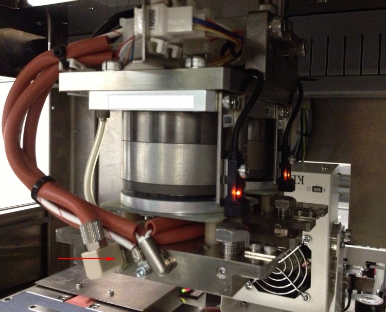

Service History
Subject: NS-8040 index head 6 unable to heat up
Handler Model: NS-8040 (S/N: 181871)
Controller: RC520 (S/N: 03-10150)
Date: 15 Jul 2011
Symptom
NS80-39 Index head 6 unable to heat up. Only running shuttle 1.
Action
NS80-39 Index Arm 2 Head 6 unable to heat up. Only running shuttle 1.
- During heat up, HMI display for index arm 2 head 6 will become 520 deg.
- Swapped head 5 and head 6 pt sensor to confirm original head 6 pt sensor faulty.
- Prepared spare pt sensor from Getech.
- Replaced faulty sensor, enabled shuttle 2 and released handler.
Cause
Faulty pt sensor at Head 6.
